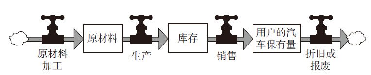
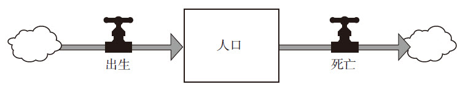
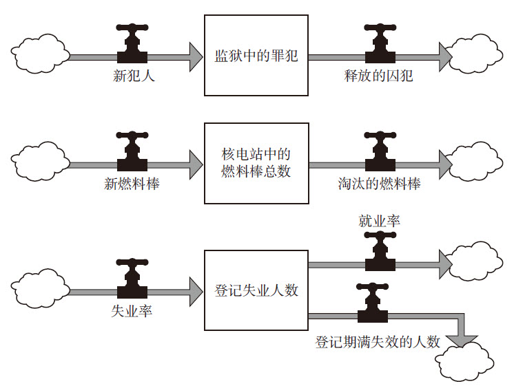

温德尔·贝里
美国肯塔基州农民、作家
麻烦的是，我们几乎完全愚昧无知，即使最博学的人也是无知的……知识获取从本质上看永远都是在破除无知，获得一些启示。我们关于世界的认识，首先告诉我们的就是，世界远远大于我们对它的认识。
我们在第2章中所讨论的一些简单系统的行为，其实已经令很多人感到困惑了，但是，以我多年从事系统思考教学和研究的经验来看，动态系统的行为变化，远远超出了我们的想象，并且，它们会持续地让我们感到惊奇。我自认为了解动态系统，但一旦遇到现实世界中的实际问题，我也经常感到尴尬和束手无策。
从中，我得到以下三项启示：
●我们认为自己所知道的关于这个世界的任何东西都只是一个模型。每一种语言、每一个字，都是一个模型；所有的地图、统计数据、图书、数据库、方程式和计算机程序，也都是模型；包括我们头脑中认知和描述世界的方式，即心智模式，也是模型。所有这些都不是真实的世界，永远也不可能是。
●我们的模型通常是与现实世界高度一致的。这就是我们为什么会成为这个星球上最为成功的一个物种的原因。尤其是我们经由对周围世界的直接观察、深入体验所建立起来的心智模式，包括对自然、人和组织的认知，是非常复杂而精密的。
●然而，与第二点相反的是，我们的模型仍远远达不到能完整地描绘世界的程度。这就是我们为什么经常会犯错误、会感到出乎意料的原因。在同一时间里，我们的大脑只能跟踪少数几个变量。哪怕基于正确的假设，我们也经常会得出不合逻辑的结论；或者依据错误的假设，得出看似符合逻辑的结论。例如，对于一个指数级增长过程所引发的增长量的变化，我们大多数人都会感到惊讶；而对于复杂系统中的振荡，只有很少的人能够凭直觉从容应对。
系统之思
我们认为自己所知道的关于这个世界的任何东西都只是一个模型。虽然我们的模型确实与现实世界高度一致，但远未达到能完整地代表真实世界的程度。
简而言之，我们需要保持多方面的均衡：一方面，对于世界是如何运作的，我们确实有很多了解，但另一方面，这还远远不够；一方面，我们的知识储备令人惊异，但另一方面，我们也是如此无知；一方面，我们可以提高自己的认知，但另一方面，我们又不可能做到尽善尽美。这看似矛盾的几对关系，我都相信它们的存在，因为这就是我在多年对系统的研究中所学习到的。
在本章中，我们将讨论为什么动态系统的行为经常出人意料。换句话说，我们将从侧面解释，为什么心智模式不能很好地考虑到现实世界中的“并发症”，以及从系统的角度可以发现哪些问题。这将是一个警告清单，显示出哪些地方隐藏着障碍物。在这样一个相互联系、相互影响的世界中，你不能对这些障碍物掉以轻心。为了在复杂的世界里自由遨游，你需要把注意力从短期事件上移开，看到更长期的行为，看到系统内在的结构；你需要清晰地界定系统的边界，以及“有限理性”；你需要考虑到各种限制性因素、非线性关系以及时间延迟。如果不能很好地兼顾系统的适应力、自组织和层次性等特征，你很可能会误读系统、不当干预或者错误设计。
如果你真的理解了所有这些系统特征，那么你可能不会经常感到惊讶，但无论如何，你还是会感到意外。这对你来讲，到底是好消息还是坏消息，取决于你是否想要控制世界，并愿意接纳系统带给你的惊喜。
经济学家 肯尼思·博尔丁
系统是一个大大的黑箱子，
我们无法打开它的锁；
我们所能看到的，
只是什么东西进去了，什么东西出来了。
理解输入与输出的搭配，
再与其他参数联系起来，
这样，我们就可以发现输入、输出和状态之间的关联。
如果它们之间的关联清晰而稳定，
我们就可以预测出它可能的态势；
如果我们的预测不灵——但愿不要如此，
我们只能被迫打破它的盖子！
系统会呈现出一系列事件，迷惑我们，或者说，是我们自己在观察世界时被自己愚弄了。每天的新闻会告诉我们关于选举、战争、政治辩论、灾难以及股市涨跌的消息；我们大部分日常谈话也是关于什么时间、什么地点发生了什么事，例如某支球队获胜了，某条河水泛滥了，道琼斯工业平均指数冲破10000点大关了；哪儿发现了一个大油田，哪儿的森林被砍伐了……如果把系统视为一个黑箱子，那么事件就是这个黑箱子时时刻刻的产出。
一些事件可能是很壮观的，例如崩溃、暗杀、巨大的胜利、可怕的悲剧，它们会引发人们的各种情绪。虽然我们已经多次从电视屏幕、报纸头条或网站首页上见过类似事件，但每一次事件都与上次的不同，从而不断吸引着我们，正如每天的天气预报都不相同，我们却从未对它失去兴趣一样。就这样，各种各样的事件源源不断地吸引着我们的注意力，也时常让我们感到惊讶，因为我们看待世界的方式几乎没有预见性，也不能揭示其内在的原因。就像冰山浮在水面之上的部分一样，事件只是一个更为巨大的复杂系统中为人可见的一小部分，但往往不是最主要的。
如果我们可以看到相关的事件是如何积累形成动态行为模式的，我们就不会感到太惊讶了。
例如，一支球队处于连胜状态，大有夺冠的趋势；河水的消涨变化在增强，雨季水位更高，而旱季水流更少；道琼斯指数已经连续两年呈现上涨的趋势；发现新油田的频次越来越少；森林的砍伐与日俱增等。
系统的行为就是它的表现或绩效水平随时间变化的趋势，有可能增长、停滞、衰退、振荡、随机或进化。如果新闻报道有深度的话，它会把当前的事件与历史背景联系起来，这样我们就能够更好地理解行为层面的变化趋势，而不只是停留在较浅的事件层面。当遇到一个问题时，善于进行系统思考的人要做的第一件事，是寻找数据，了解系统的历史情况以及行为随时间变化的趋势图。这是因为，系统行为的长期趋势为我们理解潜在的系统结构提供了线索，而系统结构又是理解系统会发生什么以及为什么发生这些事情的关键，让我们不仅“知其然”，而且“知其所以然”。
系统结构是各种存量、流量和反馈回路的相互关联与作用。我们常用包含各种变量和箭头的图表（如存量—流量图等）来描述系统结构。结构决定了系统可能存在哪些行为。例如，一个调节回路会呈现出达成目标的行为，也就是说系统会接近或保持动态平衡状态；而增强回路则会引发指数级增长。二者联系在一起，则可能呈现出增长、衰退或均衡三种行为模式。如果其中包括时间延迟，则可能产生振荡。如果它们是周期性波动或快速爆发，系统则可能产生更多令人惊讶的行为。
系统之思
系统结构是行为的根源，而系统行为体现为随时间而发生的一系列事件。
系统思考需要反复审视结构和行为，善于系统思考的人会将二者联系起来，理解事件、行为以及结构之间的关系。例如，当你的手从“机灵鬼”玩具上移开时（事件），它就会弹起来并来回振荡（行为），而这一行为是因为“机灵鬼”自身的弹簧（结构）所引起的。
在“机灵鬼”这个的简单例子里，事件、行为和结构之间的区别是很明显的，但对于其他系统，可能就不那么明显了。事实上，现实世界里很多分析都只是停留在事件层面上。如果你炒股，你就会发现，每天晚上的股评，很多都是就事论事的分析：因为美元下跌，所以股市上涨了；或者利率上升了，民主党获胜了，两个国家发生了冲突等。
这样的分析不能使你预测明天会发生什么，也不能让你改变系统的行为，比如使股票市场更少波动，或者使公司更健康，更好地鼓励投资等。
相对于事件层面的分析，大多数经济分析都会更进一步，到达行为层面。例如，一些计量经济学模型往往会以复杂的方程式，来发掘和表示收入、储蓄、投资、政府开支、利率、产出以及其他变量的历史趋势，以及它们之间的统计关系。
这些基于行为层面的模型比事件层面的分析更有价值，但它们仍然有一些根本性的问题。首先，它们普遍过分强调了系统流量，而对存量关注不足。经济学家们喜欢追踪流量的行为，因为那是最有趣的变量，也是系统最快表现出来的变化。
例如，经济新闻报道中经常会关注国民生产总值GNP（流量），而不是实体资本总量（存量）。前者是一个国家或地区的国民经济在一定时期（一般为一年）内，以货币形式表现的全部最终产品和服务价值的总和；而后者是一个国家或地区所有的工厂、机器设备、农场和工商企业等资本的总和，正是它们才能生产出各种产品和服务。但是，如果不了解这些存量如何经由各种反馈过程对相关的流量产生影响，你就不能很好地理解经济系统的动态，或者这些行为产生的原因。
其次，计量经济学家们试图发现各种流量之间在统计上的关系，但这往往是徒劳的，他们不过是在寻找一些不存在的东西。其实，在任何一个流量与其他流量之间都没有稳定的关系。流量有大有小、有开有关，存在各种组合，受存量而非其他流量的影响。
让我们用一个简单的系统来做一下解释。假设你对温度调节器一无所知，但是你有一组数据，记录了过去一段时间内房间里热量流入、流出的量。通过比较这些流量在过去这段时间里的变化，你可能会发现它们之间的关联，因为在正常情况下，它们都受同一个存量（室温）的控制，它们之间确实存在联动性。
你可以用公式去预测明天的室温，但是有一个前提条件，那就是：系统没有发生变化或故障。只要系统的结构发生了一些变化，你所发现的两个流量之间的关系很可能就会改变。例如有人打开了窗户，改善了保温效果，调整了火炉开关，或者忘了加油。如果房间的主人请你把屋子弄暖和一些，或者室内温度突然降低，需要你去想个办法，或者你希望用更少的燃料去维持同样的温度，那么在行为层面的分析就很难奏效了。你不得不再深入发掘系统的结构。
因此，基于行为的计量经济学模型在预测短期经济走势时很有效，但是在做长期预测时却表现很差；同样，它们在帮助人们找到如何改善经济的对策方面也无能为力。
同时，这也是各类系统让我们感到惊讶的原因之一。我们太沉迷于系统产生出来的事件，却很少关注系统行为的历史，也不善于从后者中发现线索，去揭示潜在的系统结构。要知道，系统结构才是系统行为与事件产生和演进的根源所在。
《混沌》作者 詹姆斯·格雷克
线性关系很容易理解：越多越好。线性方程组是可解的，因此广泛存在于各种教科书中。线性系统有一个重要的模块化属性，即你可以把它们拆分成一个个部件，然后重新组装起来。
非线性系统通常不可解，不能被拆分和拼装。非线性关系意味着身处其中的参与者可以随时改变游戏规则。变化的不确定性使得非线性关系难以被计算，但它也可以比线性系统产生出更为丰富多彩的行为。
我们通常并不特别擅长理解关系的本质。在系统中，如果两个要素之间的关系是线性的，就可以用一条直线来表述，它们之间有着固定的比例。例如，我在地里施了10磅肥料，就可以多收2斗谷物；如果施20磅肥料，收成将增加4斗，依此类推。
非线性关系是因与果之间不存在固定的比例关系；二者的关系只能用曲线或不规则的线来表示，不能用直线。例如，如果我在地里施了100磅肥料，收成可增加10斗；如果施200磅肥料，收成也不会再增加了；如果施300磅，甚至出现减产。为什么呢？因为土壤的有机质被破坏了，庄稼被“烧”死了。
世界上到处都是非线性关系。因此，如果我们以线性思维来观察这个世界，就会经常感到惊喜。很多人都知道，一分耕耘，一分收获；付出两分耕耘，就可能有两分收获。但是，对于非线性系统就并非如此。两分耕耘，可能只能得到1/6的收获，也可能得到四倍的收获，或者根本没有收获。
以下是一些非线性关系的范例：
●随着高速公路车流量的增加，车辆密度（每公里内汽车的数量）从零增长到一定限度时，汽车行驶速度会受到轻微的影响；然而，在超过这个限度之后，只要汽车密度再稍微增加一点儿，汽车行驶速度就会显著降低。之后，就会形成交通拥堵，汽车行驶速度会降到零。
●在相当长的时间里，土壤流失都不会对收成造成多大影响，但是一旦表层土壤被冲蚀掉，植物的根系裸露出来，就会造成作物收成的大幅下降。
●少量一些格调高雅的广告可以唤起人们对某款产品的兴趣；但是一大堆庸俗喧嚣的广告则可能招致人们的反感。
通过上面这些例子，你可以看出为什么非线性关系会让人感到惊讶——它们不符合看似合理的预期和推理，并不是少许努力就有少许回报，更多努力就会有更多回报；或者少数破坏性行为只产生可以容忍的少量伤害，更多这样的行为产生更大的伤害。如果以类似这样的预期来看待非线性系统，将会不可避免地碰壁或犯错。
理解非线性是非常重要的，不仅因为它们有悖于我们对行动与结果之间关系的正常预期，更重要的是，它们改变了反馈回路的相对力量对比，有可能使系统从一种行为模式跳转到另外一种。
对于我们在第3章中提到的几类系统而言，非线性关系是发生“主导地位转换”的主要原因，例如从指数级增长模式突然转变为衰退，就是因为非线性关系，导致系统由增强回路占主导转变为调节回路占主导。
为了让大家更形象地理解非线性关系的效果，我们来看一下云杉色卷蛾入侵北美森林造成破坏性伤害的案例。
系统寓言
云杉色卷蛾、冷杉和杀虫剂
树木的年轮记录显示，在过去至少400多年时间里，每隔一段时期北美地区云杉色卷蛾就会泛滥成灾，杀死大量云杉和冷杉树。但是，直到本世纪，几乎也没人对此特别留意。这是因为，在林业行业，有价值的是美国五针松，而冷杉和云杉一向被归入“杂木”类。然而，由于原生松树植株的消失，林业企业终于开始关注起云杉和冷杉树了。这也使得云杉色卷蛾突然被视为一种危害性极大的昆虫。
所以，从20世纪50年代开始，北美北部林区开始每年喷洒DDT农药，以控制云杉色卷蛾的泛滥。尽管每年都喷药，但色卷蛾虫害每年都会再度爆发。DDT的使用从50年代一直延续到70年代，直到DDT被禁止使用为止。在此之后，人们开始喷洒杀螟硫磷、高灭磷、西维因以及甲氧氯等农药。
尽管后来人们意识到杀虫剂不能彻底解决虫害问题，但它们仍然被认为是不可缺少的。正如一位护林人所说：“杀虫剂为我们赢得了时间。所有森林管理员都希望赢得时间，让树木生长，直到成材。”
到20世纪80年代，杀虫成本已经非常高昂了，加拿大新布伦瑞克省（New Brunswick）当年用于防虫的费用竟高达1250万美元。一些市民开始抗议，反对滥用有毒杀虫剂。尽管如此，云杉色卷蛾每年仍要毁掉多达2000万公顷（约5000万英亩）的森林树木。
不列颠哥伦比亚大学的霍林（Holling）和新布伦瑞克大学的戈登·巴斯克维尔（Gordon Baskerville）两人使用计算机建模技术，对虫害问题进行了全方位的系统分析。他们发现，在开始使用农药之前，在大多数年份里，云杉色卷蛾的数量都很少；它们受到很多捕食者的控制，包括一些鸟类、蜘蛛、寄生蜂，以及其他疾病的影响。然而，每隔一二十年，就会有一次色卷蛾虫害大爆发，持续约6～10年时间。接下来，害虫数量会减少，直到下一次爆发。
色卷蛾倾向于先侵害香脂冷杉，其次是云杉。在北部林区，香脂冷杉是最有优势的树种。依靠自身的特点，香脂冷杉可以排挤云杉和桦树，使它们无立足之地，从而使得整片森林逐渐成为香脂冷杉一“人”的天下。然而，每次色卷蛾虫害的爆发都会大大减少冷杉的数量，使得云杉和桦树有了生长的空间。然后，冷杉数量会慢慢恢复，并再次称雄。
随着冷杉数量的增加，色卷蛾虫害大爆发的可能性也迅速增加。但二者的关系是非线性的。色卷蛾的繁殖能力很强，数量增长远快过相应的食物供给的增长。最后，只要有两三个温暖、干燥、非常适合色卷蛾幼虫生长的春天，就可能爆发大规模的虫害。如果只在事件层面上分析，可能还会有人把虫害的爆发归咎于某个春季的天气呢。
色卷蛾数量增长太快，超过了它们的天敌能够控制的限度，二者的关系也是非线性的。在大多数情况下，大量色卷蛾也将导致捕食者数量的快速增加。此时，这是一个同向变化关系——色卷蛾越多，捕食者数量增长越快。但是，超过某个点之后，捕食者就不能再加速繁殖了。此时，二者关系转变为非线性关系，色卷蛾更多，但捕食者不能更快地繁殖。最后，大规模虫害爆发了，一发不可收拾。
现在，只有一件事可以阻止虫害的爆发，那就是：色卷蛾吃掉了大片大片的冷杉，导致自己的食物减少。到了这个时候，色卷蛾数量会迅速减少——这也是非线性的。原先，色卷蛾自我繁殖的增强回路（色卷蛾数量越多，新出生的色卷蛾就越多）占据主导地位；现在，大量色卷蛾被饿死的调节回路占了上风。之后，在冷杉死掉的地方，云杉和桦树又生长起来……如此周而复始。
数十年来，色卷蛾—冷杉—云杉的系统周期性振荡，但是总体来讲，仍在一定限度内保持着生态的稳定性。它们可以一直这样延续下去。色卷蛾的主要作用是不让冷杉一树独大，保持树种和环境之间的动态平衡。但是，生态上的稳定并不等于经济上的稳定。在加拿大东部，当地经济几乎完全依靠伐木，而这主要依靠的就是冷杉和云杉的稳定供给。
当人类开始使用杀虫剂之后，整个系统的平衡就被打破了，系统内部各种非线性关系之间微妙的平衡点也很难达到了。因为杀虫剂杀死的不只是害虫，还有害虫的各种天敌，因此削弱了大自然中存在的控制害虫的反馈回路。这样一来，冷杉的密度一直保持在较高的水平上，使得色卷蛾的数量难以降低到数量开始快速降低的那个点，因而虫害可以每年爆发一次。
这样的森林管理措施使色卷蛾始终保持着“亚爆发状态”，也使森林管理当局坐在了一个随时可能爆发的“火山口”上，深陷其中，欲罢不能。继续用药的话，只能勉强维持，疲于应付；而如果放弃用药，色卷蛾的反扑力度又将空前强大，甚至可能彻底毁掉整个森林。
系统之思
系统中的很多关系是非线性的，它们的相对优势变化与存量的变化是不成比例的。反馈系统中的非线性关系导致不同回路之间主导地位的转换，也相应地引起系统行为的复杂变化。
生态经济学家 加勒特·哈丁
当我们进行系统思考时，一个基本的误解是容易把它和另外一个流行词——“副作用”混淆。“副作用”这个词意味着，存在一些“我没有预见到或者想到的”结果。其实，副作用只不过是“主要结果”的副产品而已。进行系统思考很难，我们很容易曲解自己的语言，为自己开脱，让自己相信没有必要这么做。
还记得我们在第1章和第2章中画的一些结构图中存在一些云状物吗？千万不要小看这些云！它们是系统之所以让我们感到意外和惊奇的主要来源之一。
云表示的是流量的源头和终点。它们是一些存量，是流量的来源和去处，但是为了便于讨论，我们暂时对其进行了简化和忽略。它们标记着系统图的边界，但很少是系统真正的边界，因为系统很少有真正的边界。从某种意义上讲，每一种事物都与其他事物存在着联系，或多或少，或深或浅。例如，海洋与陆地之间并不存在泾渭分明、清晰明确的界线，社会学与人类学也很难截然分开，汽车的排气管和你的鼻子之间也存在着联系。所谓的边界，只是人为的区分，是人们出于观察、思考、理解、表达、交流等方面的需要，而在心理上设定的或社会上一般公认的虚拟边界。
系统最大的复杂性也确实出现于边界上。例如，在德国和捷克的边境线两侧，两国居民并非水火不容，而是你中有我，我中有你；在森林与草原之间，物种也在相互渗透，森林里的动物会溜达到草原上，草原上的动物也会在一定程度上渗透进森林中。因此可以说，恰恰是边界上的无序、混杂，成为了多样化和创造力的根源所在。
在我们上一章提到的汽车库存系统里，导致经销商库存增加的流入量（即汽车到货量）的源头以云来表示。当然，汽车并不是从云彩里凭空掉下来的，它们需要经历一系列复杂的生产、运输过程，离不开各种原材料，以及资本、劳动力、能源、技术、管理等要素。类似地，库存的流出量（即汽车销售量）的去向也可以用云来表示，并不意味着这些汽车化为云朵飘到天上去了，而是销售给了千家万户使用。
因此，我们在分析问题时，究竟要不要深刻地考虑制造商的原材料、成品库存等因素，以及消费者对汽车的使用、维修、更换等问题，还是将其简化为一朵云，主要取决于我们要研究的是哪个系统，这些存量是否对于我们所关注的系统行为变化有显著影响。如果原材料的供应充足而稳定，而且顾客对汽车的需求是持续的，那么用云来表示就是有效的。相反，如果原材料出现短缺，或者产品供过于求，抑或是顾客的需求出现了重大变化，而我们在考虑问题时没有把这些存量划入系统的边界进行考虑，那么未来系统将出现令我们意想不到的事件。在这种情况下，就不能再将其化简为云、忽略不计了。
但是，在图4—1中，依然存在云，系统的边界还可以继续扩展：制造汽车的原材料来自化工厂、钢铁厂或炼油厂，而它们的输入都是来自于地球。同时，加工过程不只是制造出了产品，带动了就业，也创造了福利和利润，产生了污染。用户用旧了的汽车报废之后，要么被丢进了垃圾填埋场、焚化炉，要么开进了拆车厂、循环再生中心。在那些地方，它们继续对社会和环境施加着影响：垃圾场的废物、废气、废液泄漏，有可能造成水、空气污染；焚化炉产生浓烟和灰烬；循环再生中心则将一些材料回收利用。
图4—1 揭开“云”背后的一些存量
究竟要不要考虑各种流量的所有环节，从矿山到垃圾填埋场，或者叫“从摇篮到坟墓”，这主要取决于谁想知道什么，出于何种目的，以及在多长的时间范围考虑问题。从长期来看，完整地考虑流量的各个环节是很重要的；同时，随着实体经济的增长，社会的“生态足迹”不断扩大，“长期”也正在不断向我们靠近，成为“短期”。
似乎在一夜之间，垃圾填埋场已经被装满了，这让很多人感到诧异和不可理解，因为在他们看来，垃圾丢出去就应该是“消失”了。同样，很多原材料也不是取之不尽、用之不竭的，包括煤炭、金属、石油、天然气和水源等，都在以惊人的速度枯竭。
从足够长的时间维度上看，即使是矿山和垃圾填埋场也不是故事的全部。整个地球系统更大的物质循环驱动着各种物质的转化，沧海桑田不断变迁。亿万年之后，今天在垃圾填埋场里的所有东西都可能位于高山之巅，或者深海之下，形成新的金属矿藏或石油煤炭。对于我们居住的这个星球而言，没有什么东西是“云”，也没有最终的边界。即使空中飘浮着的真正的云，也是水循环的一部分。每一件事物都来自他处，每一件事物都走向他处，所有的事物都处在不断的运动、变化之中。
当然，这并不是说，每一个模型都必须包含所有的关联，直到囊括了整个星球。在建模时，云是模型必不可少的一部分，因为建模本身就是一个形而上的过程，必须合理地划分边界。有些东西确实是凭空生出来的，例如我们经常会说：“怒从心头起”，或者“爱意油然而生”，愤怒、爱、仇恨、自尊，等等，从字面意义上讲都是从“云”里来的，很难讲清楚来由。因此，如果我们试着去理解某一件事，就必须将其简化，这就意味着设定边界。而且，这样做通常是安全的。例如，我们把人口的出生和死亡看做是来自白云和化为云，并没有什么问题。
图4—2显示的就是“从摇篮到坟墓”过程的实际边界。但是，对于解释其他一些问题，例如出现大量的移民或人口的剧烈波动，抑或是探讨产房床位、墓地空间是否充足等，这些边界就显得过于宽泛且无用了。
图4—2 更大的云
对于系统思考者来说，认识和把握系统的边界是一个很难的课题，因为在系统中，并不存在一个明确、清晰划定的边界，而是要我们根据自己的需求和实际情况去划定。边界划定不当，很可能会带来一些问题。
如果边界划定得太窄，一些对系统行为有显著影响的因素未被认真分析和对待，系统就可能产生令你意想不到的行为。
例如，你想解决城市交通拥堵问题，而未考虑到人们的居住、生活模式，这一问题将很难得到有效解决，一些对策甚至可能会引发更大的问题。比如，你建起一些快速路，试图缓解交通压力，但这吸引了一些房地产公司在快速路沿线开发地产项目；相应地，这些地产项目又增加了更多的交通流量，导致高速路也开始拥堵起来。
系统之思
世界是普遍联系的，不存在孤立的系统。如何划定系统的边界，取决于你的分析目的，也就是我们想问的问题。
如果你想使流经你所居住城镇的一条河的河水变得清澈，你就不能把边界只划定在你所居住的城镇，必须把整条河都考虑进来，因为如果上游的污染源得不到有效治理，你的努力就将是徒劳的。同时，你要考虑的可能还包括河流两岸的土壤和地下水。当然，你可能无需考虑另外一个流域的问题，更不用考虑地球水循环问题。
在规划国家公园时，人们以前只是划定了一个物理的边界，认为把这里面保护起来，问题就能解决了。然而，在保护区之外，野生动物会定期迁徙、四处游荡，河流水系（包括地下水）也会流入、流出，人员往来穿梭，因此界线之外的人类活动、经济发展也会影响到保护区。近年来，这样的例子屡见不鲜，包括酸雨、温室效应引发的全球变暖、气候变化等。即使没有气候变化，想有效管理国家公园，你也必须把边界设定得比法定边界更宽。
与此相反，在进行系统分析时，人们经常陷入另外一个陷阱：把系统边界设定得太宽。在分析一个问题时，往往要画好几页的图表，密密麻麻，用很多箭头把各种事情都联系起来——在他们看来，这样才是一个系统嘛！唯恐如果你少考虑了一件事，就显得你不那么系统。
其实，“我的模型比你的大”只是一个浅薄的想法，其结果是分析过于庞杂，堆积了大量的信息，反而遮掩了问题的真实答案。例如，在模拟全球气候问题时，堆砌了所有的细节，列举了各种各样的原因，虽然很充实、有趣，但反而更容易让人迷失，无法发现如何减少二氧化碳排放、控制气候变化的关键。
在思考一个问题时，正确地设定边界很重要，但这和学术研究上的边界以及政治上的边界不是一个概念。河流可能是两个国家之间天然的界线，但对于水源的数量和质量管理而言，如果也以这个作为界线，那结果就可能不尽如人意了。同样，大气治理也不能仅限于政治上的边界。对于温室效应、臭氧空洞或海洋污染来说，国家之间的边界没有任何意义。
理想情况下，对于每一个新问题，我们都应该在头脑中为其划定一个合适的边界。但是，我们往往很难保持这样的灵活性。一旦我们在头脑中划定了一些边界，它们就会逐渐变得根深蒂固，甚至理所当然。为此，很多争斗都是与边界有关的，例如国家之间的战争、贸易壁垒、人种差异、文化隔阂、公共部门与私营企业之间的责任划分、贫富差距、污染与被污染、现代人与子孙后代，等等。对于经济和政府、艺术与艺术史、文学与文学评论之间的边界问题，在学术上可以争论很多年。事实上，大学本身就是边界僵化的一个典例。图4—3展示了更多关于边界划定的示例。
图4—3 更多关于“云”的示例
这些都是一些复杂的系统，你可以以此作为起点，但不能局限于既定的边界进行分析，不能让“云”阻止了你的思考。根据你所研究的问题，你可能需要超越这些边界进行思考。例如，什么因素导致新犯人的增加？燃料棒淘汰之后去了哪里？失业人员在其登记期满失效以后怎么办？等等。
系统提示
正确划定系统边界
从某种程度上看，划定系统的边界需要较高的艺术性。请记住：边界是我们自己划定的，对于新的问题，出于不同的目的，可能需要并且应该对其进行重新考虑。事实上，在面对每一个新任务时，都应该忘掉在上一次任务中行之有效的边界划分；而针对当前问题的需要，应创造性地划定最合适的边界。对很多人来说，这是一个不小的挑战。但是，为了有效地解决问题，这也是十分必要的。
系统之所以让我们感到惊奇，是因为在我们的思维中，倾向于认为单一的原因只会引发单一的结果。同一时间内，我们往往只能考虑一件或至多几件事情。而且，我们不喜欢考虑限制因素或范围，尤其是当我们在制订自己的计划或力求实现既定目标的情况下。
但是，我们所生活的这个世界并非如此简单。通常情况下，很多原因一起起作用，会产生很多种结果；多个输入产生多个输出；而且，几乎所有输入和输出，都会受到各种限制。例如，工业生产过程就需要：
●资本
●劳动力
●能源
●原材料
●土地
●水
●技术
●信用
●保险
●客户
●管理
●公共基础设施以及政府服务（如治安、消防、教育、医疗卫生等）
●员工和客户的家庭、社区
●稳定、健康的生态系统，供应或者支持各种原材料、生产要素，吸纳或处理生产中的废弃物等
在一小片土地上种植谷物，则需要：
●阳光
●空气
●水
●氮
●磷
●钾
●各种微生物
●松软肥沃的土壤以及有机质
●控制野草和昆虫的一些系统或机制
●保护其免受工业生产废弃物伤害的措施
根据德国化学家尤斯蒂斯·李比希（Justus von Liebig）提出的著名的“最小因子定律”，我们在上面列出的只是种植谷物必不可少的一些要素。在李比希看来，如果缺少其中任一项要素（如磷元素），即使有再多的其他要素都不管用；同样，如果问题是缺少钾元素，一股脑地施加再多的磷元素也毫无意义。
正如俗话说：巧妇难为无米之炊。如果没有酵母，即使有再多的面粉，也做不出面包来。小孩子不管吃了多少碳水化合物，如果缺少蛋白质，身体也不会健康。同样，不管有多少客户，没有资本，公司也无法正常运营；相反，资本再多，如果没有客户，公司的运营也难以为继。
这就是“限制因素”的概念，虽然很简单，但是很多人却对此存在误解。
例如，农学家认为，通过检测土壤中各种营养成分的含量，可以确定最佳的施肥量。但是，他们是否把作物生长所需要的各种必不可少的限制因素都考虑到了？人工制造的化肥会对土壤中各种微生物和有机质造成什么样的影响？化肥是否会影响或限制土壤其他功能的发挥？化肥的生产又受到哪些限制？这些问题是否已经得到周全的考虑，并可以清楚地回答？
一些发达国家将资本或技术转移到欠发达国家或地区，但是效果不佳，受援助国的经济并未有大的起色，很多人对此大感困惑。其实，经济发展也有很多限制因素，不只是资本和技术，甚至这些东西根本不是受援助国经济发展最主要的限制因素。
在人类经济发展史上，确实有一段时期，制约生产力提升的最大因素是资本和劳动力。解决了这两个问题，就能推动经济发展。因此，大多数经济发展措施也只重点关注这两个因素（有时候也会考虑技术因素）。然而，随着资本和劳动力“瓶颈”的突破，经济逐步发展，日渐与生态系统息息相关，限制因素也开始转变为清洁的水源、空气、垃圾填埋场、能源以及原材料供应等。在这种情况下，如果还是按照传统只关注资本和劳动力，就事倍功半了。
在系统动力学领域，一个经典模型是由系统动力学奠基人、麻省理工学院教授杰伊·福瑞斯特开发的公司成长模型。在该模型中，一家初创企业非常成功，快速成长，而问题的关键是认识并处理各种限制因素，这些因素会随着公司自身的成长而不断变化。
例如，如果公司雇用了更多的销售人员，订单就会大量增加，从而超出了工厂的产能，导致交货延迟、部分客户流失。此时，产能成为最主要的限制因素。于是，管理者决定投资建厂，以缓解欠货压力。新厂建设过程中，需要雇用大量的新员工，并对其进行培训，而这通常慢于厂房和机器设备安装、到位的速度，并不受太多的重视，因而效果欠佳。于是，开始出现一些产品质量问题，再次导致客户流失。此时，员工的技能成为最重要的限制因素。所以，管理者又开始加强对员工的培训。逐渐地，质量得以改善，新的订单又大量增加，但是这时候，订单执行和跟踪系统又出现了拥堵……如此，不一而足。
系统之思
在给定的一段时间内，对于系统来说，最重要的一项输入是限制或约束力度最大的那个因素。
事实上，对于每一个工厂、儿童、流行病、新产品、技术、公司、城市、经济和人口等，都存在多重限制。你不仅需要知道有哪些限制因素，它们中的哪个或哪些起着主要作用，而且需要认识到，如果增长变缓或者约束变强，就说明起主导作用的限制因素正在发生改变。植物的生长与土壤的相互作用，公司扩张和市场的博弈，经济发展与资源之间的关系都是动态变化的。当一种因素的制约被解除了，成长就开始启动，而成长本身会改变各种限制因素之间的强弱对比，因此，相对最为稀缺的一种因素开始逐渐发挥作用。这时候，成长就会减缓或陷入停滞。要将注意力从相对丰富的资源（制约力没有那么强）转移到潜在的下一个最主要的限制因素，需要对成长过程的真正理解，并具备有效把控的能力。
任何一个有着多重输入和输出的物质实体，包括人口、作物生长、生产过程、经济发展等，都受到多重限制因素的制约。随着系统的发展，系统自身会影响和改变各种限制因素，也在这一过程中实时地受到各种限制因素的影响。系统与其限制环境之间构成了一个相互进化的动态系统。
系统之思
任何成长都存在限制，有些限制是自发的；而有些则是系统施加的。从根本上讲，关键不是追求持续成长，而是选择在哪些因素的限制之下维持生存。
然而，理解系统受到多重因素限制，对即将到来的下一个限制因素保持警惕，并不是实现持续成长的秘方。在限定的环境里，任何物质实体要想永远保持持续成长是不可能的。因此，从根本上讲，关键不是追求持续成长，而是选择在哪些因素的限制之下维持生存。如果你的公司能以可承受的价格生产某些精美的产品或服务，订单就会蜂拥而至，直到你无法应付，出现某些瑕疵或限制，降低了产品的完美程度，或者提高了它的价格；如果某一个城市居民的生活环境明显优于其他城市，人们就会络绎不绝地聚集到这个城市，直到超过该城市可以容纳的限度，导致生活环境变差。
成长总是不可避免地会受到限制，其中有些限制是自发的，而有些则是系统施加的。没有任何物质实体可以永远成长。如果公司管理者、政府当局、社会人口不能认识到其成长过程所面临的限制，并自觉地对其成长过程加以选择和控制，那么环境也会做出选择，并施加限制。
捷克共和国第一任总统、剧作家 瓦茨拉夫·哈维尔
我惊恐地意识到，我急迫地希望重建民主，有些做法却几乎已经和理想主义者一样了。我一直希望更快地推动历史的发展，却犯了“拔苗助长”的错误。
我意识到，当我们试着创造一个新事物时，我们必须学会等待。我们必须充满耐心地播种，精心浇灌土地，让种子自己发芽、生长，它需要时间。你不可能愚弄植物，你更不可能愚弄历史。
无论是植物的成长、森林的荫蔽，还是民主的发展，都需要时间。同样，你投入邮箱里的信到达目的地，需要时间；顾客注意到价格的变化，并据此调整他们的购买行为，需要时间；建造一座核电站，需要时间；机器的磨损，需要时间；新技术的普及，也需要时间。
我们经常对事物发展需要多少时间感到出乎意料。对此，福瑞斯特告诉我们，当我们在搭建模型或应对延迟时，可以先去问一问系统里的每一个人，他们认为时间延迟有多长，对其进行分析、做出最精准的预测，然后再扩大三倍。我也发现，对估计写一本书需要多长时间，这一修正方式也同样适用。
在系统中，时间延迟比比皆是。每一个存量都是一个延迟，大部分流量也有延迟，包括运输延迟、感知延迟、处理延迟、成熟延迟等。以下是我们在建模过程中发现的一些很重要的延迟范例：
●在病毒感染和症状发作去就医之间存在延迟（有时候也称为“潜伏期”）——有可能是几天，有可能是几年；
●在污染发生与污染物在生态系统中扩散或积累、造成危害之间，存在延迟；
●能繁家畜禽和农作物从出生到成熟之间存在延迟，使得这些大宗商品的价格具有周期性振荡的特性：猪的周期为4年，奶牛的周期为7年，可可树的周期为11年；
●改变人们认为合适的家庭规模的观念至少需要一代人的时间；
●生产线更换工装以及资本存量的周转也有延迟。设计一款新车并将其投放市场需要3～8年的时间，它在市场上作为新车销售的生命周期约为5年，而它可以在路上平均行驶10～15年。
正确地划定系统的边界取决于讨论的目的，对于重要的延迟也是这样。如果你所关心的波动持续数周，你大可以不必考虑数分钟或数年的延迟；如果你关心的是长期的人口规划、经济预测，时间跨度可能持续数十年，你通常可以忽略为期数周的振荡。因此，一项延迟是否显著取决于你试图理解的频率处于哪一档。
在第2章“系统大观园”中，我们已经用实例展示了一些重要的反馈回路是如何影响系统行为的。改变延迟的长短可以彻底地改变系统行为，同时，延迟也常常作为敏感的政策杠杆点。这是因为，如果系统中的一个决策点对某一些信息存在反馈延迟，使反馈延迟更长或更短一些，决策就可能偏离目标，从而导致人们为达到目标而采取了更多或更少的行动。同时，如果采取行动太快，则可能因过度反应而放大短期的波动，产生不必要的振荡。时间延迟决定了系统的反应速度有多快，达到目标的准确性，以及系统中信息传递的及时性。矫枉过正、振荡和崩溃也经常是由时间延迟所引起的。
系统之思
当在反馈回路中存在较长的时间延迟时，具备一定的预见性是必不可少的。如果缺乏预见性，等到一个问题已经很明显了才采取行动，将会错过解决问题的重要时机。
认识时间延迟，有助于我们理解为什么戈尔巴乔夫可以在几乎一夜之间改变了苏联的信息系统，却不能改变实体的经济——这需要数十年时间。我们也可以更好地理解为什么东西德国合并，社会所经历的痛苦期要远远长于政治制度的变革。因为建设新的发电厂需要很长时间，电力工业经常被周期性的波动所困扰，要么是供过于求、产能闲置，要么是供不应求，导致拉闸限电。因为海洋对气候变化的反应时间延迟长达数十年，导致人类燃烧化石燃料排放的二氧化碳已经对气候变化造成了严重影响，一两代人都难以修复。
亚当·斯密
只要每一个人都竭尽所能地管理好自己的资本，使其价值最大化，就能支持本国的产业……从主观上讲，他的确并不想提高公共利益，也不知道自己对公共利益有多大帮助……他的目的仅仅是促进个人的利益所得……他在一只“看不见的手”的引导下，在实现自己利益的过程中，无形之中增进了公共利益。通过追逐个人利益，他可以更多、更有效地促进社会利益，甚至比他真心希望促进社会利益时还要有效。
如果市场这只“看不见的手”真的能够引导个体在追逐私利的同时也增进集体的福利，那确实是太棒了。那样的话，不只是物质上的自私将成为社会美德，对于经济的数量模拟也将变得容易得多。无需考虑他人的利益，或者复杂的反馈系统的运作。难怪亚当·斯密的模型在200多年的时间里都一直有着如此强大的吸引力。
不幸的是，事实并非如此。这个世界呈现给我们更多的现实是，人们倾向于理性地从自己短期的最大利益出发，但每个人的行为汇集起来的结果却是所有人都不愿意看到的。
例如，世界各地的游客蜂拥至夏威夷的威基基海滩或瑞士瓦莱斯州的采尔马特冰川，却开始抱怨这些地方已被众多旅游者破坏了；农民生产出了过多的小麦、黄油或奶酪，然后价格突然暴跌；渔民们过度捕鱼，却最终导致自己没了饭碗；众多公司看到有利可图就加大投资，最终导致供大于求和商业的周期性波动；穷人本来就不富裕，却比富人生育和抚养着更多的孩子。
为什么？
这就是世界银行经济学家赫尔曼·戴利所说的“看不见的脚”（invisible foot），或者是诺贝尔经济学奖获得者赫伯特·西蒙（Herbert Simon）所说的“有限理性”（bounded rationality）。
系统之思
有限理性意味着，人们会基于其掌握的信息制定理性的决策，但是由于人们掌握的信息通常是有限的、不完整的，尤其是对于系统中相隔较远或不熟悉的部分，由此导致他们的决策往往并非整体最优。
例如，渔夫并不知道哪里有多少鱼，也不了解同一天里其他渔夫多捕或少捕了多少鱼。同样，一位商人也无法确切地知道其他商人正在计划哪些方面的投资，有哪些顾客愿意购买，或者各种产品之间如何相互竞争。他们不知道市场的规模，也不知道自己当前所占的市场份额。他们有关这些方面的信息都是不完整的，存在时间延迟，而且他们自身的反馈也存在延迟。因此，经常出现系统性地投资过度或者产能不足。
正如西蒙所说，我们并非无所不知、理性的乐观主义者；相反，我们是浮躁的“自足自乐者”，在做下一个决策之前，总是试图最大程度地满足当前的需求。我们会以理性的方式尽力维护和扩大自身的利益，但是却只能基于自己所知道的信息进行思考。除非他人有所行动，否则我们不会知道他们计划做什么。我们也极少看到自己面前存在的所有可能性，也通常不会预见到自己的行动对于整个系统的影响，甚至有可能选择性地忽略这种影响。因此，我们只能在自己有限的视野范围内，从当前几种很明显的选择中进行抉择，并坚持自己的看法，不会考虑整体的长期最优方案。只有在被迫的情况下，我们才会改变自己的行动。
一些行为科学家认为，我们甚至不能很好地解读自己所掌握的那些有限的信息。
●我们会对风险做出错误的估计，将其中一些事情的危害程度估计得过高，或者轻视其他一些事情的危险性。
●我们也容易过度夸大当下状况的重要性，对眼前的经验非常重视，而未对过去给予足够的重视。
●我们会更加关注当前的事件，而对一些长期的行为不那么关心。对于未来的价值，我们会按照自己的价值判断，打一些折扣，这些价值判断会受到经济或生态等方面的影响。
●对于所有输入的信号，我们不能正确地评估它们的重要性。我们不会全盘接受自己不喜欢的，或者不符合我们心智模式的所有信息。
这就是说，即使为了最优化自己个体的利益，我们有时也不能做出完全正确的决策，更别提系统整体的利益了。
有限理性理论对主流经济学提出了挑战，后者是建立在200多年以前亚当·斯密的政治经济学基础之上的。如果你对经济学有一定了解，就很容易看到二者之间的差别有多大，这也导致了长期激烈的论战。发源于亚当·斯密的经济学理论首先假设，每个市场主体都是基于完备的信息、完全理性地做出行动的“经济人”（homo economicus）；其次，当各个行为主体按照这些规则行动时，他们的行动累加起来，就会产生对每个人来说都是最优的结果。
从长期证据来看，这两个假设都无法成立。在下一章中，我们会深入探讨其中一些最常见的结构，它们可能导致有限理性，并最终酿成灾难。它们是一些常见的现象，包括上瘾、政策阻力、军备竞赛、目标侵蚀以及公地悲剧等。总之，如果不能理解有限理性，你将会备感意外。
假设你因为某种原因，离开了自己所熟悉的生活环境，来到一个完全陌生的社会之中，对于那里人们的行为，你很难理解。
或者，之前你是一个坚定的反对派，而现在突然成了政府的一员。或者，你之前是一名普通员工，现在突然变成了管理层[1]。或者，你之前是一名环保主义者，一直批评某家大企业的新建开发项目，而现在，一夜之间，你成了该企业的员工，需要推进这一项目。
如果发生这类巨变，各个方面都突然不同了，你将如何应对？频繁地经历这样的转变，能帮助人们拓宽视野吗？
在你的新位置上，你会经历新的信息流、激励和限制因素、目标、差异以及压力——只有发生这种彻底的转变，你才能如此真切地经历和感受到有限理性。也许你会回想起以前从另外一个角度是如何看问题的，而且在你转变了系统视角之后，也会激发一些创新，但这无疑是不可能发生的。如果你变成了管理者，你可能不再会把员工看做是生产线上有功劳的伙伴，而是将其视为需要缩减的成本；如果你变成了投资人，你也可能和其他投资人一样，在繁荣期过度投资，在衰退期投资不足；如果你变得一贫如洗，可能也会对每天的每一项开支斤斤计较、精打细算，并期盼着哪一天能有发达的机会，或者打算多生几个小孩；如果你是一名渔夫，渔船是抵押贷款购置的，要供养家庭，又对鱼群数量的状况也不了解，在这种情况下，很可能也会过度捕捞。
系统之思
要想改变行为，首先要跳出你所在系统中固有的位置，抛弃当时观察到的有限的信息，力求看到系统整体的状况。从一个更广阔的视角来看，可以重构信息流、目标、激励或限制因素，从而使分割的、有限的、理性的行动累加起来，产生每个人都期盼的结果。
在教学中，我们通过游戏模拟演练也能发现类似结果。在这个过程中，学生们置身于模拟的情境，扮演各种不同的角色，对真实、不完整的信息流做出反馈。作为渔夫，他们会过度捕捞；作为发展中国家的最高领导人，他们会优先考虑核心产业的需要，而不是人民的需求；作为上流社会成员，他们会精心装饰自己的爱巢；作为社会的底层，他们会变得冷漠或逆反。如果换成是你，也会如此。在美国心理学家菲利普·津巴多（Philip Zimbardo）实施的著名斯坦福监狱试验中，令人感到震惊的是，在很短的时间内，扮演者的态度和行为就能和真正的看守与囚犯十分相似。
有时候，在信息有限的情况下，个人也能做出理性的决策，但有限理性并不能成为人们目光短浅的借口，而是为我们提供了理解为什么会产生这些行为的机会。处于系统的特定位置上，他的所见、所知都是有限的，而其行为是合理的。在有限理性的情况下，如果换成另外一个人，结果仍是相同的。因此，只是责备个人，并不能有助于产生更加符合人们期望的结果。
令人感到惊奇的是，只要稍微强化一下有限理性，更好、更及时地提供更多、更完备的信息，行为的转变其实可以是很快、很容易的。
系统寓言
荷兰房屋的电表
在阿姆斯特丹郊区的一个地方，有一些同一时期建造的独栋别墅，样子几乎一模一样。由于某种未知的原因，其中一些房屋的电表被安装在了地下室，而另外一些则被安装在前厅里。
这些电表都有一个透明玻璃罩，里面有一个小的水平金属圆盘。家庭用电越多，圆盘就转得越快，而电表的刻度盘上显示着累积的用电度数。
在20世纪70年代早期石油禁运和能源危机时期，荷兰政府开始重视能源的使用。统计发现，在这个地区，有些家庭的用电量比其他家庭少1/3。对此，没有人可以给出合理的解释，因为所有家庭都是类似的，用电价格也一致。那么，为什么会有这样的差别呢？
调查结果表明，差别取决于电表的安装位置。用电多的家庭，电表都是安装在地下室，人们很少能看得见电表；而用电少的家庭，电表则是安装在前厅中，每当人们走过，都能看到电表的小圆盘在转动，提醒人们本月的电费在不断增加[2]。
尽管存在有限理性，只要系统的结构设计得很精致，仍然可以在合适的时间、合适的地点做出合适的反馈，维持着适当的功能。例如，在一般情况下，你的肝脏只会得到必要的信息，去完成其需要执行的任务。在未受扰动的生态系统和传统文化中，每个人、物种或种群，都以自己的方式服从并服务于系统整体，保持着整体的稳定性。尽管每个个体都有自己的策略，但这些系统和其他很多系统总体上都是可以自我调节的。正常情况下，它们不会产生问题，也无须设置治理机构或者制定这样那样无用的政策。
系统之思
系统中每个角色的有限理性可能无法产生促进系统整体福利的决策。
从亚当·斯密之后，人们一直相信，自由竞争市场是一种设计得当、可以自我调节的系统。在某种程度上，它确实如此；然而，在另外一些情况下，事实就并非这样了，而且大家都很容易发现类似的证据。自由市场经济体系的确允许生产商和消费者，对生产机会和消费选择拥有最好的信息，以做出公平的、不受限制的、理性的决策。但是，这些决策本身并不能纠正整体系统内生的垄断倾向，以及一些不利的副作用（外部性），比如对穷人的歧视，或者产能的波动。
让我们借用一句常用的祈祷词，并稍加改造来祈祷吧：
让神赐给我们一颗平静的心，在结构精致的系统中自由地使用我们的有限理性；让神赐给我们勇气，去重塑结构不良的系统；让神赐给我们智慧，去理解其中的差别。
受到信息、动机、抑制因素、目标、压力以及对其他角色的限制等因素影响，系统中的每一个角色都存在有限理性，这可能会产生促进系统整体福利的决策。如果不能，即使在同一个系统中放进新的角色，也不会改善系统的表现。要想有所变化，就必须对系统的结构进行重新设计，改进信息、动机、抑制因素、目标、压力以及对某些特定角色的限制等。
[1] 在西方，通常劳资双方、员工和管理层之间存在难以调和的利益冲突或矛盾。——译者注
[2] 这个故事是我1973年在丹麦科勒克勒（Kollekolle）参加一次会议时听说的。——作者注